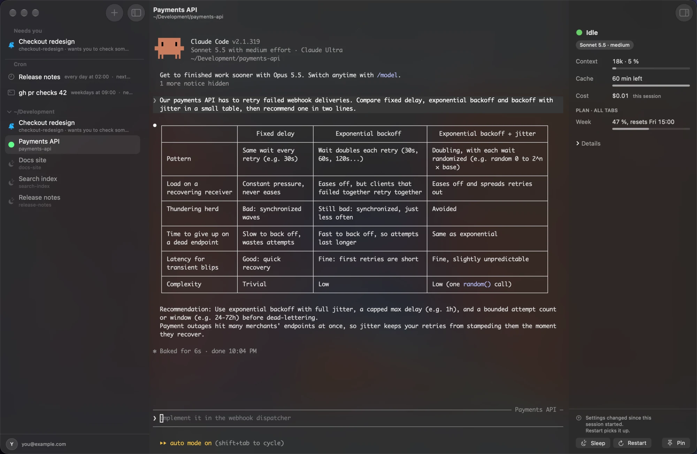
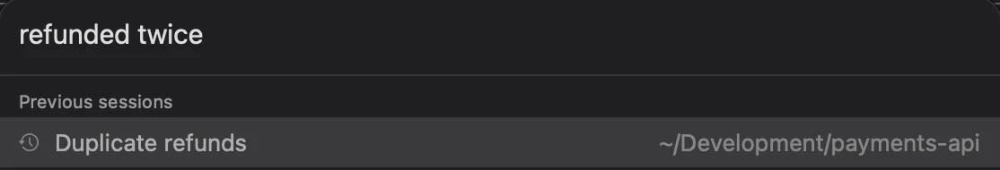
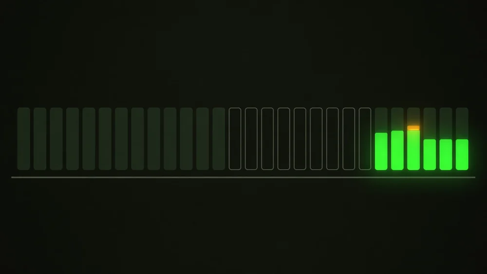

A native Mac terminal for Claude Code
Run twenty Claude Code sessions. Pay for the ones that work.
Miterm puts idle sessions to sleep before their cache expires, keeps the rest warm, and rings only when one actually needs you.
Free · Notarized by Apple · macOS 26 on Apple silicon · Runs on your Claude Code login

- SidebarWho needs you, what's scheduled, who's asleep.
- TerminalA real one. All of Claude Code keeps working, unchanged.
- InspectorContext, cache clock, cost, your week.
- 20×
- What the next message costs once a prompt cache has expired, against one read from cache. Miterm acts first.
- 0 MB
- Held by a sleeping session's Claude Code, down from hundreds. The conversation is intact when it wakes.
- 1 bell
- However many sessions you run. It rings only when one is stuck without a decision from you.
Lower the cost
An idle session costs you twice.
It holds memory while doing nothing. Then its prompt cache runs out, and your next message rewrites the whole conversation. Miterm watches the clock so you don't have to.
- Sleeps before the cache expiresA large idle tab is compacted and put to sleep minutes before the deadline. Anything still working is never touched.
- Keeps the tabs you need warmA pinned tab, or one waiting on your answer, has its cache renewed through Claude Code's own plugin API: no turn, no line in your conversation.
- Compacts before a turn runs awayEvery request re-reads the whole conversation, so sessions compact well before that gets expensive, unless you set your own window.
- Leaves unused MCP servers offServers a folder hasn't called all week stay out of every request. A session that needs one turns it back on and carries on.
After a session's last reply
A plain terminal
Miterm
Seen on a real tab: a question stood unanswered for 6.5 hours on an 864k-token conversation. Seven silent renewals later, the next message read 863,720 tokens from cache and rewrote 715.
The right model
The cheaper model isn't always cheaper.
Half the price per token can still cost more per task, because a model that takes more turns re-reads the whole conversation on each one. The right model and effort for the job saves both time and usage.
- Price per token misleadsFor desktop and MCP tool work, Opus on high is cheaper than Sonnet on xhigh, for about the same result. At maximum effort, Sonnet cost more per task than Opus and took longer.
- Maximum is rarely worth itSonnet on xhigh came close to the best coding results at a fraction of the cost and time of Opus at its maximum.
- Miterm makes the callNew sessions start on what their folder's work has called for. Tabs switch only when it's cheap, and every switch has a Revert.
What Miterm's guide picks
- Coding that runs on its own
- Sonnet 5.5 xhigh
- Desktop and MCP tool work
- Opus 5.5 high
- Planning and hard reasoning
- Opus 5.5 xhigh
- A chat you follow along with
- Opus 5.5 medium
- Small, simple jobs
- Haiku 5.5 high
Why these picks, and what to avoid. From public benchmarks and our own measurements, November 2026.
Lower the load on you
One bell, only when it's your move.
Twenty sessions shouldn't mean twenty tabs to check. An assistant reads what each one finished and rings only when a session is stuck without a decision from you.
- Nothing to keep track ofSessions wake with their conversation intact, loops keep running, and Remote Control reconnects on its own.
- Never types over your draftA half-written message stays exactly as you left it.
- Decides, and lets you undoMiterm acts rather than asking, with a line in the action log and a Revert, instead of one more setting or prompt.
Memory
Find any past session in one keystroke.
⌘P searches open tabs and every conversation on your Mac, by title, folder and what was said.
- Search by meaningType what you remember. When the words find little, a small Claude model widens the search to the words such a session would have used.
- ⌘P, Return reopens what you just closedRecently closed comes first.
- Sessions can look back too
/miterm:recalllets a session search its project's earlier conversations and notes. - Sleeping tabs don't expireClaude Code deletes old transcripts, by default after 30 days. Miterm warns you, and keeps a sleeping tab's as long as the tab stays in the sidebar.

While you're away
Work that doesn't need an open tab.
Schedules, parked tasks and tidying all run from Miterm itself, so they outlive any one session.
- Schedules that survive restartsThe same
/loopand cron tools hand their jobs to the app, so they live through sleep and restarts. A tab can sleep between runs. - Checks that cost nothing
/miterm:scheduleruns a shell command and wakes the session only when it passes: CI green, a file there, a host up. - Later, on spare budgetBudget left when the week resets is simply gone.
/miterm:laterparks a task and runs it on that budget. - CLAUDE.md files that tidy themselvesOn that same spare budget, a grown file is merged and condensed. Every number and name stays, what moves out goes word for word to a history file, and every dream has a Revert.

Also in the box
Built for sessions that run for days.
Team members
Start a member in its own tab under its lead. Leads can start, rename, answer and switch the model of their members.
Subagent rows
Background agents appear under their session. Click one to read its conversation while it works.
Messages wake sleepers
A message to a sleeping tab by name wakes it, and arrives once the tab is up.
Suggestions
A fact a session found true in every project is proposed for your global CLAUDE.md. Nothing lands there without your click.
Inspector
Each tab's model, effort, size, cost and cache misses, and every switch Miterm made, with a Revert.
Plan limits
The 5-hour and weekly windows, tracked per request, so you see what a choice really costs.
Notes before compaction
A session writes what it learned into its project's CLAUDE.md before it's compacted or put to sleep.
Backlog
/miterm:backlog keeps open work out of CLAUDE.md. Start opens a tab on an item.
Skip permissions, if you want
Off by default. It rides on each launch and never touches your Claude Code settings.
Native, not a web page
Written in Swift, for the Mac.
An 11 MB download with a real terminal underneath, so all of Claude Code keeps working, with the Mac's own notifications, windows and full screen on top.
| Miterm | A plain terminal | A web-based app | |
|---|---|---|---|
| Built with | Swift and AppKit | native, but knows nothing about Claude | JavaScript in a browser shell |
| Idle sessions | sleep and wake where they were | stay in memory | stay in memory |
| Prompt cache | timed, kept warm or compacted | left to expire | left to expire |
| Needs you | one bell with the reason | you check each tab | you check each chat |
Trust
It ends sessions for you, so it refuses when in doubt.
Wrongly ending a session destroys work. Wrongly leaving one awake only wastes memory. Every judgement in Miterm leans towards leaving it alone.
Your settings stay yours
What Miterm needs rides on each launch. It asks before any change to your Claude Code config.
No account, no telemetry
The only network call Miterm itself makes is the update check on GitHub. Your conversations go where Claude Code already sends them.
It spends too, and says so
Its assistant, search and notes run on your Claude login and count against your plan. Dreams and parked tasks use only spare budget.
Everything it did, in one log
Who asked, why, and what happened, including what it refused to do.
Notarized by Apple
Developer ID signed, so it opens without a workaround.
Updates in place
A new version takes over every tab while it runs. If the takeover fails, the old version stays and keeps your tabs.
Getting started
Nothing new to learn.
- Download itUnzip Miterm and move it to Applications. It updates itself from then on.
- Type
claudeOpen a tab and work as you always do, or reopen any earlier conversation with ⌘P. - Go do something elseMiterm minds the clocks and sleeps what's idle. The bell tells you when it's your move.
Questions
Before you download.
What does it cost?
Miterm is free to download. You pay for Claude as you do now.
Is it worth it with only a few sessions?
The more sessions you run and the longer they live, the more it saves. If you work in one short session at a time, you gain little beyond the cache clock and ⌘P search.
What is a prompt cache, and why does it matter?
Claude Code re-sends the whole conversation with every request. While it is cached, those tokens are read at 0.1× the normal price. Once the cache expires, the next request writes all of it again at up to 2×. On a long conversation, that one message costs as much as twenty cached ones.
Does it change how Claude Code works?
No. Miterm is a real terminal and claude runs inside it, in your zsh, bash or fish, with your plugins and settings. Miterm adds its own plugin to each launch, without writing to your settings.
Does it work with an API key?
It is built for Claude plans. An API key has no plan limits to read, so the meters and everything that runs on spare budget have nothing to go on, and the assistant's calls are billed to your key.
Intel Macs or older macOS?
No. Miterm needs macOS 26 on Apple silicon.
Is it open source?
Not at the moment. Builds are published on GitHub Releases.
Which model for which job?
A new session starts on the chat pick below, or on what its folder's last sessions settled on, unless you name a model yourself. After a compaction, Miterm checks whether the tab's work still fits its model, and switches it at a moment when that is cheap. Nothing is saved to your Claude Code settings, and every switch can be reverted from the inspector.
| Work | Model and effort | Why |
|---|---|---|
| Coding that runs on its own (agents building to a plan) | Sonnet 5.5xhigh | Close to the best coding results, at a fraction of the cost and time of Opus at its maximum |
| Desktop and MCP tool work (CAD, 3D, design apps) | Opus 5.5high | Near the best result for well under half the cost of max; Sonnet costs more here, not less |
| Planning, architecture, hard reasoning, code review | Opus 5.5xhigh | The strongest reasoning short of max, for a little over half its cost |
| A chat you follow along with | Opus 5.5medium | Anthropic's default. You are the double-check; go to high if corrections pile up |
| Small, simple jobs (expanding a search, sorting) | Haiku 5.5high | Far cheaper per task than Opus 5.5 on low, for a somewhat lower general score |
Rules of thumb
- Cost per task, not per token. A cheaper model that writes more and takes more turns can cost more per finished task.
- Cache reads are most of the bill. Cost follows turns times context size, so effort moves it more than the model's price does.
- Switch models only at a free moment: a new session, a wake, right after a compaction. Each model has its own cache. Effort can change any time and keeps the cache.
- Raise effort when Claude skips a file, doesn't run the tests or doesn't double-check its work.
Avoid
- Medium or low effort for work nobody watches.
- Max effort, unless the last few points are worth twice the cost.
- Older models (Opus 5 and 4.8, Sonnet 5 and 4.x): some level of Opus 5.5 is both better and cheaper.
- Fable 5.1: it cost more for the same work in every comparison we read.
/model <name>and/effort <level>: both save as your default. For this session only, type/modelor/effortalone, pick with ←/→ and presss.
From public benchmarks and our own measurements, November 2026. Models change, and so will this table.
Stop paying for sessions that sit idle.
Keep your terminal habits. Lose the babysitting.
Download Miterm 0.4Free · macOS 26 on Apple silicon · Claude Code